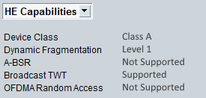

HE Capabilities
To display high efficiency (HE) capabilities of the device under test, select "HE Capabilities" in the field below the "DUT / UE Info" area. Refer to IEEE P802.11ax, section 9.4.2.237 HE Capabilities Element.

HE capabilities in main view
Indicates device class for a non-AP STA based on its TX power and RSSI measurement accuracy capabilities.
Remote command:Indicates fragmentation support including supported level.
Remote command:Indicates support of an asynchronous buffer status report (BSR) control field.
Remote command:Indicates support of broadcast target wake time (TWT) operation.
Remote command:Indicates support of OFDMA random access procedure.
Remote command: